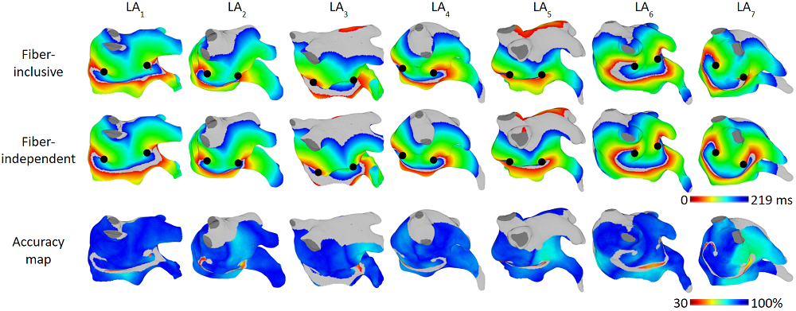
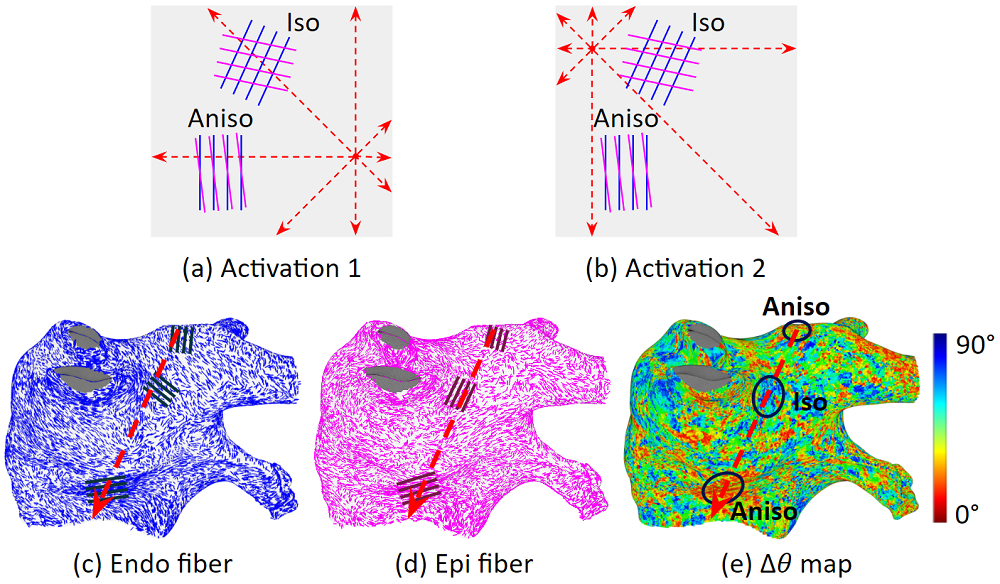
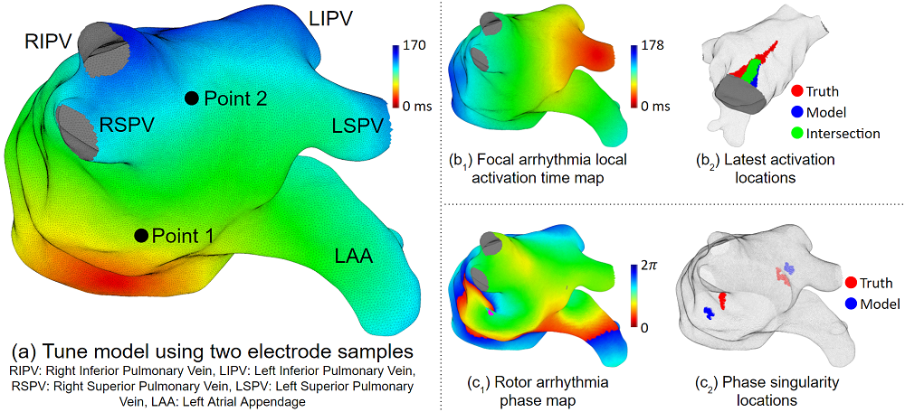
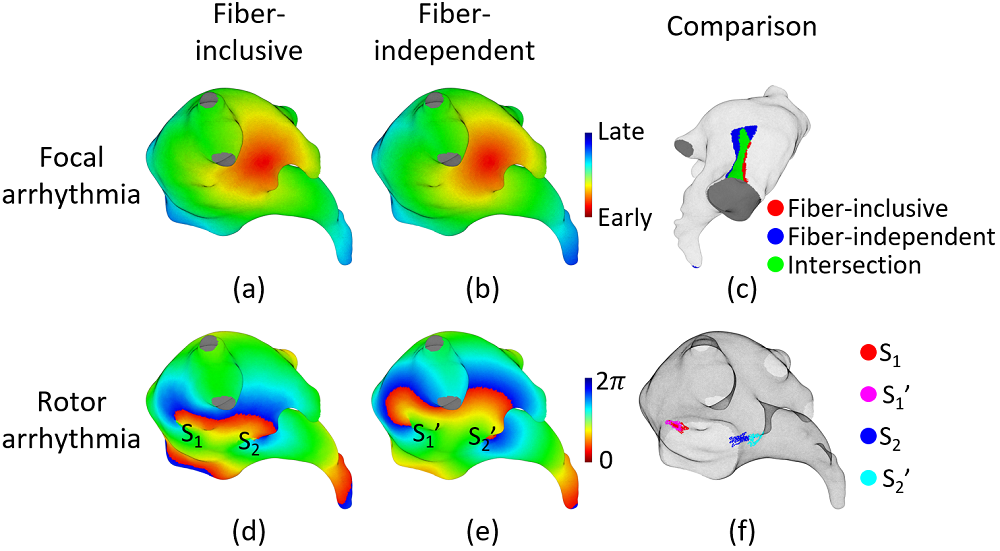
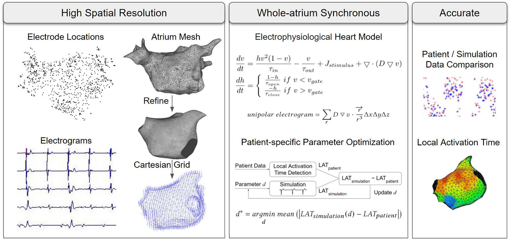
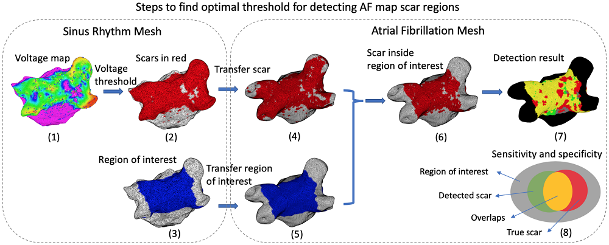

Individualization of atrial tachycardia models for clinical applications: Performance of fiber-independent model Jiyue He, Arkady Pertsov, John Bullinga, Rahul Mangharam IEEE Transactions on Biomedical Engineering, Jul 2023, doi: 10.1109/TBME.2023.3298003. TBME journal is ranked No. 3 by Google Scholar. This paper received the Featured Article Award. One of the main challenges in developing patient-specific models of cardiac arrhythmias for clinical use is accounting for the varying organization of myocardial fibers in different hearts, which cannot be directly measured in living tissue. This paper aimed to evaluate the accuracy of left atrium activation maps produced by a fiber-independent (isotropic) model with tuned diffusion coefficients compared to a model that incorporates myocardial fibers with the same geometry. The study utilized DT-MRI data from seven ex-vivo hearts with detailed fiber organizations, and compared 51 cases of focal and rotor arrhythmias in different regions of the atria. The fiber-independent model demonstrated an average local activation time accuracy of 96% for focal and 93% for rotor arrhythmias. This model could be a promising tool for clinical use due to its reasonably good performance and the availability of readily accessible data for model tuning in cardiac ablation procedures. |
Fiber organization has little effect on electrical activation patterns during focal arrhythmias in the left atrium Jiyue He, Arkady Pertsov, Elizabeth Cherry, Flavio Fenton, Caroline Roney, Steven Niederer, Zirui Zang, Rahul Mangharam IEEE Transactions on Biomedical Engineering, vol. 70, no. 5, pp. 1611-1621, May 2023, doi: 10.1109/TBME.2022.3223063. TBME journal is ranked No. 3 by Google Scholar. This paper received the Featured Article Award. In the past two decades, there has been a trend towards developing detailed and realistic models of cardiac conduction. However, as models become more realistic, personalization and clinical application become more challenging due to limited availability of tissue and cellular scale data. One such challenge is obtaining information on myocardial fiber organization in the clinical setting. This study investigates a chimeric model of the left atrium that uses patient-specific atrial geometry but foreign fiber organization. The study found that even significant variations in fiber organization had a minimal impact on the spatio-temporal activation pattern during regular pacing. Activation maps were very similar across all tested fiber organizations for a given pacing site. |
Real-time atrial tachycardia ablation guidance with a left atrium model Jiyue He, Arkady Pertsov, Rahul Mangharam Heart Rhythm Society Abstract, volume 20, issue 5, May 2023, doi: 10.1016/j.hrthm.2023.03.343. HRS is a top academic/clinical organization of heart rhythm in the world. Electrophysiological heart models have shown great potential for assisting with arrhythmia ablation, but most existing models are computationally intensive and require high-resolution data from MRI or CT scans. To address these limitations, we developed a computationally efficient left atrium model that can be tuned for patient-specific parameters using only data from the electroanatomical mapping system. This model can run in real-time and is suitable for pre-ablation arrhythmia source exploration. The tuning process involves measuring local activation times from two far apart locations on the endocardium using Pentaray, Lasso, or ablation catheter, and takes only 15 seconds (on a personal laptop computer) to obtain a patient-specific heart model. During the ablation procedure, the model can be updated and re-tuned automatically. Our study showed that this fiber-independent left atrium model has good accuracy in predicting activations for both focal and rotor arrhythmias, demonstrating its potential as a useful tool for real-time ablation guidance. |
Tachycardia activation pattern predictivity of a fiber-independent left atrium model Jiyue He, Arkady Pertsov, John Bullinga, Rahul Mangharam Cardiac Physiome Society 2023. CPS is a global conference on cardiac modeling. Acquiring accurate fiber data for real-time guidance tools using heart models in clinical applications can take more than 50 hours, posing a challenge for their practical use. To address this challenge, we developed a fiber-independent heart model in which fibers are replaced with tuned diffusion coefficients at every location in the heart. We simulated a total of 42 focal arrhythmias and 7 rotor arrhythmias with and without fibers. The comparison results showed that the fiber-independent heart model predicted focal arrhythmia local activation times with only a 4% error and latest activation locations with 7% error, and rotor arrhythmia phase singularity locations with a 9% error. The fiber-independent model compensates for the effects of fiber using tuned diffusion coefficients, obviating the need for fiber data from MRI or CT scans, or for estimating fiber from atrium geometry or electroanatomical mapping data. Integrating such fiber-independent heart models with cardiac ablation systems has the potential to provide reliable identification of arrhythmia sources and ablation guidance. |
Patient-specific heart model towards atrial fibrillation Jiyue He, Arkady Pertsov, Sanjay Dixit, Katie Walsh, Eric Toolan, Rahul Mangharam Proceedings of the ACM/IEEE 12th International Conference on Cyber-Physical Systems, New York, NY, USA, pp. 33-43, May 2021, doi: 10.1145/3450267.3450532. ICCPS is a large-scale international conference. Atrial fibrillation is a common heart rhythm disorder that affects millions worldwide, and catheter ablation is the most effective treatment. However, it can be challenging to consistently identify the triggers and sources that initiate or perpetuate atrial fibrillation due to its chaotic behavior. To address this issue, a patient-specific computational heart model was developed to accurately reproduce activation patterns and aid in localizing triggers and sources. The study processed data from 15 patients: 8 in sinus rhythm, 6 in atrial flutter, and 1 in atrial tachycardia. The average local activation time error is 5.47 ms for sinus rhythm, 10.97 ms for flutter and tachycardia, with an average correlation of 0.95 for sinus rhythm and 0.81 for flutter and tachycardia. These promising results indicate that the model is an effective tool in capturing complex rhythms like atrial fibrillation to guide physicians in effective ablation therapy. |
Electroanatomic mapping to determine scar regions in patients with atrial fibrillation Jiyue He, Kuk Jin Jang, Katie Walsh, Jackson Liang, Sanjay Dixit, Rahul Mangharam The 41st Annual International Conference of the IEEE Engineering in Medicine and Biology Society, Berlin, Germany, pp. 5941-5944, Jul 2019, doi: 10.1109/EMBC.2019.8856704. EMBS is a large-scale international conference. During catheter ablation for atrial fibrillation, left atrial voltage maps are commonly obtained using electroanatomic mapping. While a threshold is used to identify low voltage areas in patients with prior catheter ablation in sinus rhythm, such a threshold has not been established for maps obtained during atrial fibrillation. To define a voltage threshold, it is crucial to maximize the topologically matched low voltage areas between the maps obtained during atrial fibrillation and sinus rhythm. This paper presents a novel method to enhance the sensitivity and specificity of the matched low voltage areas. The proposed method was evaluated on a test cohort of seven patients, incorporating a total of 46,589 data points. On average, the geometric mean improved by 3.00%, sensitivity improved by 7.88%, and specificity improved by 0.30% compared to the standard method. This approach could aid in the development of a voltage threshold for identifying low voltage areas in the left atrium of patients with atrial fibrillation. |
|
Issued by University of Pennsylvania Student Recognition Award for my commitment and excellence in scientific researchIssued by IEEE Transactions on Biomedical Engineering (TBME journal is ranked No. 3 by Google Scholar) Featured Article Award for paper "Individualization of atrial tachycardia models for clinical applications: Performance of fiber-independent model"Featured Article Award for paper "Fiber organization has little effect on electrical activation patterns during focal arrhythmias in the left atrium"Issued by Guangdong University of Technology 1st Prize in Creative Design in Automation Competition1st Prize in Knowledge Contest of Electronic Design CompetitionMost Innovative Award in Creative Design in Automation Competition2nd Prize in the Challenge Cup Extracurricular Science and Technology CompetitionIssued by Guangdong (a province of China with 130 million residents) 3rd Prize in the National Undergraduate Electronic Design Contest3rd Prize in Automobile Electronic Design CompetitionIssued by Guangzhou (the provincial capital of Guangdong with 19 million residents) 1st Prize in the 19th Youth Science and Technology Innovation Contest2nd Prize in Environment Protection Design of Secondary Schools3rd Prize in Youth Festival of Science and Technology3rd Prize in Applied Physics Competition of Middle Schools3rd Prize in Science Project Contest.3rd Prize in Youth Invention Competitions and Scientific Conferences |